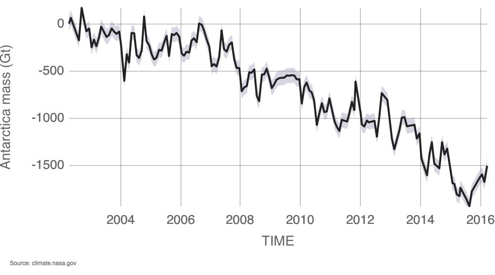

Изменение морского льда в Антарктике с 2002
Data from NASA's GRACE satellites show that the land ice sheets in both Antarctica and Greenland are losing mass. The continent of Antarctica (left chart) has been losing about 134 gigatonnes of ice per year since 2002, while the Greenland ice sheet (right) has been losing an estimated 287 gigatonnes per year. (Source: GRACE satellite data)